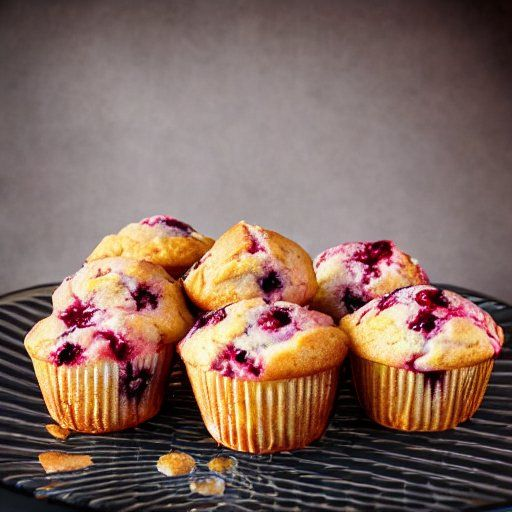

Muffins aux framboises
Préparation: 15 minutes
Cuisson: 35 minutes
Total: 50 minutes
Ingrédients
-
2 t de farine tout usage

-
1 c. à thé de poudre à pâte
-
1/2 c. à thé de bicarbonate de soude
-
1/2 c. à thé de sel
-
1/4 c. à thé de cannelle moulue
-
1/2 t de beurre ramolli
-
2/3 t de sucre
-
2 gros oeufs
-
1/2 t de crème sure
-
1 c. à thé d'extrait de vanille
-
1 t de framboises surgelées grossièrement hachées
Instructions
Combiner les 5 premiers ingrédients dans un bol. Bien remuer.
- 2 t de farine tout usage
- 1 c. à thé de poudre à pâte
- 1/2 c. à thé de bicarbonate de soude
- 1/2 c. à thé de sel
- 1/4 c. à thé de cannelle moulue
Battre en crème le beurre et le sucre dans un bol moyen. Incorporer les oeufs l'un après l'autre, en battant.
- 1/2 t de beurre ramolli
- 2/3 t de sucre
- 2 gros oeufs
Ajouter la crème sure et la vanille. Battre pour mélanger les ingrédients.
- 1/2 t de crème sure
- 1 c. à thé d'extrait de vanille
Ajouter le mélange de farine. Remuer pour humecter.
Incorporer 1 t de framboises surgelées grossièrement hachées en pliant la pâte. Remplir presque complètement les moules graissés.
Cuire au four à 180 °C (350 °F) pendant 30 à 35 min jusqu'à ce que les muffins soient dorés et qu'un cure-dent inséré au centre en ressorte sec. Laisser reposer 10 min. Démouler.